El objeto de este informe no es un hombre. Es el proceso por el cual la captura del fugitivo más buscado de Costa Rica —el mayor éxito operativo contra el crimen organizado en una década— se convirtió, en menos de siete días, en el detonante de la peor crisis entre poderes del Estado en la historia reciente del país.
Ese desplazamiento del objeto es deliberado y es la contribución analítica de este documento. La crónica policial de la Operación Némesis está ampliamente cubierta por la prensa nacional; repetirla no agregaría valor. Lo que no está analizado es por qué un resultado que todos los actores declararon deseable produjo, en lugar de convergencia, la ruptura. Esa pregunta es de naturaleza sistémica, no policial, y es la que el marco ADD está en condiciones de responder.
El informe cubre, en consecuencia, cuatro planos articulados:
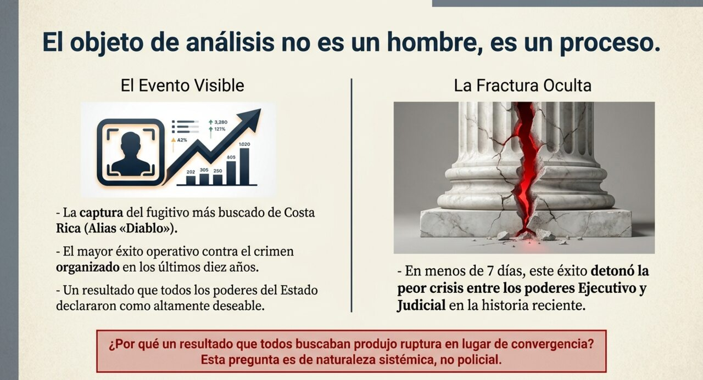
No se emiten juicios de culpabilidad. Alejandro Arias Monge es un imputado en prisión preventiva. No existe condena en firme en ninguna de las causas activas. Toda referencia a hechos delictivos se formula como imputación o como línea investigativa de las autoridades, y así se etiqueta epistémicamente. Esta no es una cautela formularia: en un caso de tan alta carga pública, la confusión entre imputación y condena es el mecanismo por el cual el discurso mediático erosiona la garantía procesal.
No se analiza la política criminal como tal. El informe no evalúa si el encarcelamiento, la extradición o el aumento de penas son estrategias eficaces. Esa es una discusión de política pública legítima pero distinta, que exigiría evidencia comparada que este documento no reúne.
La base documental de este informe es exclusivamente periodística e institucional-pública. No hay acceso a los expedientes judiciales (23-000010-601-PE y caso «Colorado»), a los partes policiales completos ni a los documentos de la DEA. Esto impone un techo a lo que puede afirmarse y obliga a un tratamiento diferenciado de las fuentes.
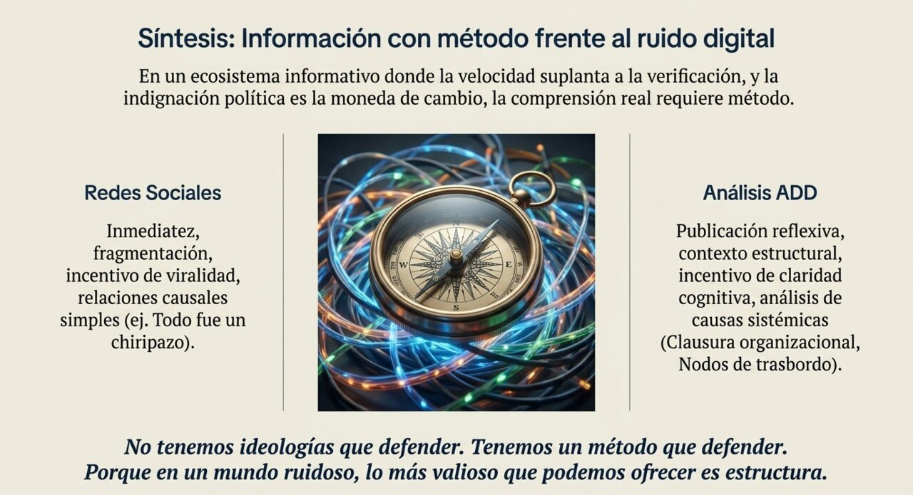
| Tipo | Ejemplos en este caso | Fiabilidad y límite |
|---|---|---|
| Institucional primaria | Comunicados del OIJ y del Poder Judicial; ficha del Departamento de Estado de EE. UU. sobre Arias-Monge; resoluciones judiciales con número de expediente | Alta para hechos administrativos y procesales. Interesada respecto de la valoración del propio desempeño |
| Declaración de actor | Conferencias de Michael Soto (OIJ) y Carlo Díaz (Ministerio Público); declaraciones de Laura Fernández, Rodrigo Chaves, Yara Jiménez, Nogui Acosta, Fernando Obaldía; declaraciones de la defensa | Confiable en cuanto a qué se dijo. No confiable, sin corroboración, en cuanto a lo afirmado. Se registran como posición, nunca como hecho |
| Prensa nacional con estándar editorial | La Nación, El Observador, Delfino.cr, Teletica, CRHoy, Monumental, Amelia Rueda, Diario Extra | Alta para hechos observables y verificables. Se privilegian los datos coincidentes entre medios de línea editorial distinta |
| Prensa internacional | Infobae, BBC Mundo, EFE, Reuters | Útil para contraste. Suele agregar contexto regional y perder precisión procesal local |
| Enciclopédica colaborativa | Wikipedia (artículos en construcción activa sobre el sujeto y sobre la captura) | Fuente terciaria de referencia cruzada. No se usa como base de ninguna afirmación [DC] |
La existencia de estas divergencias no invalida la cobertura; es información sobre cómo se produce el dato en tiempo real y debe declararse.
La trayectoria documentada no es la de un narcotraficante que llega desde afuera, sino la de una acumulación local y progresiva: del robo rural al control territorial, y de ahí a la inserción en cadenas transnacionales. Esa secuencia importa analíticamente, y se desarrolla en la sección 7.
Nace Alejandro Arias Monge en el cantón de Pococí, provincia de Limón. Inicia su vida laboral en compañías bananeras [DC].
Comienza a ser vinculado por las autoridades con asaltos a personas y robos a viviendas. Posteriormente, con robo de camiones de carga, de agroquímicos en fincas piñeras y bananeras, y de ganado [DC].
Es señalado como sospechoso en el asesinato de Ademar Jiménez Gómez, hallado acribillado y quemado en una finca bananera [DC]. Los hechos de la causa por la que hoy está en prisión preventiva —dos homicidios y una tentativa bajo modalidad de sicariato— corresponden a este año [DC].
Es detenido y permanece un año en prisión preventiva. Tras su liberación, se le vincula a una disputa armada contra la organización de Michael Alfredo Moreno Borbón, alias «Pechuga», en la zona de Limón [DC].
Nueva investigación por múltiples robos de ganado. Desde 2019 permanece en condición de prófugo; el OIJ ejecuta varios operativos sin lograr la captura [DC].
Se difunden audios atribuidos a su organización que ofrecen ₡2,5 millones por la muerte de cada policía y ₡5 millones por cada investigador del OIJ asesinado en Guápiles, Cariari y Puerto Viejo de Sarapiquí [DC] (como difusión de audios atribuidos; su autoría es materia del caso «Colorado»). Comienza además a usar redes sociales para publicar imágenes de armamento pesado y videos de agresiones [DC].
Más de cincuenta agentes judiciales estuvieron a pocos metros de capturarlo durante una actividad familiar en Cariari de Pococí. Logró escapar [DC].
La policía judicial lo vincula con la explotación de la lotería clandestina conocida como «tiempos» en Limón, presuntamente apoderándose de los puntos de venta mediante coacción. Se le identifica también el uso de recursos del narcotráfico para financiar minería ilegal de oro a cielo abierto en zonas fronterizas [DC].
Geiner Zamora, alto mando del OIJ en Guápiles, es asesinado por sicarios [DC]. La conexión causal con los audios de 2020 es una línea investigativa, no un hecho establecido [IP].
Mediante la Ley N.° 10730 se reforma el artículo 32 de la Constitución Política, habilitando por primera vez la extradición de costarricenses, exclusivamente por narcotráfico y terrorismo [DC]. El 13 de mayo de 2025 la embajada estadounidense publica la recompensa de hasta USD 500.000 por información que condujera a la captura de Arias Monge [DC].
Detención del exmagistrado y exministro Celso Gamboa y de Edwin Danney López Vega, alias «Pecho de Rata», a solicitud de Estados Unidos [DC].
Gamboa y López Vega son extraditados a Estados Unidos: los primeros costarricenses extraditados en la historia del país, con garantía diplomática de pena no superior a 50 años [DC].
El Ministerio de Hacienda aplica un recorte de ₡3.053 millones al presupuesto del Poder Judicial para 2026. El 20 de julio el Poder Judicial califica el recorte de «crítico» y advierte que podría perjudicar los allanamientos del OIJ [DC]. En paralelo, un operativo en cinco centros penitenciarios desarticula una estructura vinculada a Arias Monge dedicada al ingreso de drogas y celulares a las cárceles, con dos oficiales de Policía Penitenciaria investigados [DC].
Operación Némesis. Captura en San Bernardino de Horquetas, Río Frío de Sarapiquí [DC].
A las 5:00 a.m. del viernes 24 de julio de 2026, el Grupo Táctico SERT (Servicio Especial de Respuesta Táctica) del OIJ, con apoyo de la Unidad de Vigilancia y Seguimiento (UVISE), la Oficina Contra el Crimen Organizado (OECDO) y el Ministerio Público, ingresó a una propiedad en San Bernardino de Horquetas, Río Frío de Sarapiquí, provincia de Heredia, cerca de la frontera con Nicaragua [DC].
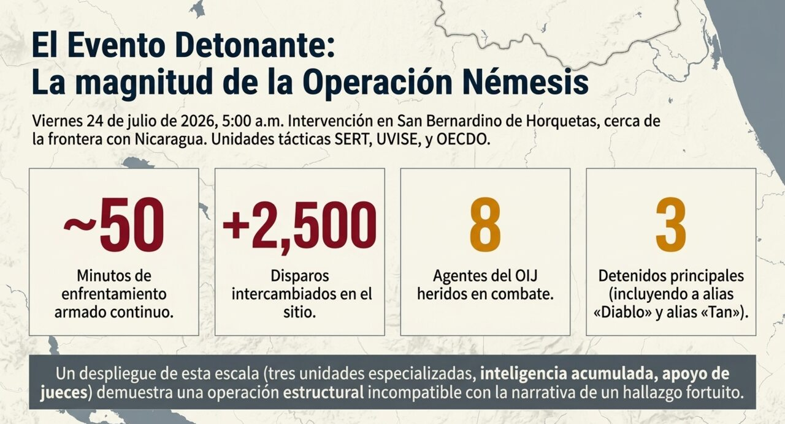
Fueron capturados Alejandro Arias Monge y Jonathan Pérez Méndez, alias «Tan», señalado como su lugarteniente. Un tercer hombre, de apellido Ríos Oconitrillo, conocido como «Coco Guácimo», murió abatido por oficiales tácticos [DC]. Se decomisaron fusiles de asalto, pistolas, abundante munición, chalecos balísticos, equipo táctico y drones empleados para vigilar los alrededores [DC].
El director interino del OIJ, Michael Soto, calificó la intervención de «operación policial compleja» y señaló que parte del personal desplegado en la retaguardia carecía de casco protector [DC]. Ese detalle, mencionado en la misma conferencia de prensa, conecta el operativo con la disputa presupuestaria y es el punto de origen de la cadena de siete días que sigue.
La secuencia que va del 24 al 31 de julio es el núcleo del fenómeno analizado. Se presenta ordenada porque su orden es analíticamente relevante.
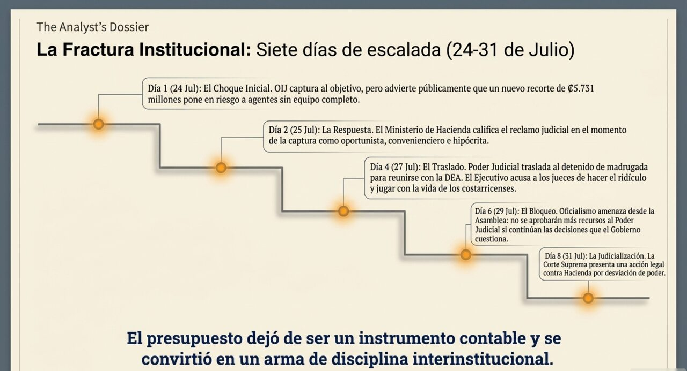
| Fecha | Acontecimiento |
|---|---|
| 24 jul | Captura. La presidenta Laura Fernández declara «Honor a quien honor merece» y felicita al OIJ, pero en la misma comparecencia sostiene que el esfuerzo presupuestario solicitado al Poder Judicial es «pequeño» y no afecta labores sustantivas [DC]. |
| 24 jul | Durante las labores posteriores al operativo, Soto es informado de un recorte adicional de ₡5.731 millones correspondientes a la norma 10 del artículo 7 de la Ley de Presupuesto 2026 (ley 10836), que destinaba al OIJ y al Ministerio de Seguridad los recursos de plazas vacantes no ocupadas entre enero y junio. Soto los solicita públicamente [DC]. |
| 24–25 jul | El ministro de Hacienda, Rodrigo Chaves Robles, responde: «Don Michael, ¿sabe qué?, no me da lástima», y califica el momento de la captura de «oportunista, convenienciero, hipócrita, aprovechado» [DC]. |
| 25 jul | Una mujer de apellidos Arias Fonseca, hija del detenido, es ubicada cerca del acceso principal a La Reforma en un vehículo blindado y portando un arma. Es identificada y retirada del sitio; contaba con permiso de portación [DC]. En el acto oficial del 25 de julio, diputados de Pueblo Soberano no aplauden el reconocimiento al OIJ [DC] (observación reportada por el diputado Ariel Robles; no hay registro audiovisual independiente citado). |
| 27 jul | Arias Monge es trasladado desde La Reforma antes de las 6:00 a.m. para una audiencia fijada a la 1:30 p.m., en caravana con dos vehículos «La Bestia». El Tribunal Penal del II Circuito Judicial de Limón, sesionando en San José por razones de seguridad, dicta prisión preventiva. El expediente es declarado de delincuencia organizada [DC]. |
| 27–28 jul | La presidenta cuestiona el manejo judicial: critica que la audiencia fuera presencial pese a la solicitud de virtualidad del Ministerio de Justicia, cuestiona el traslado matutino y afirma que un plazo corto de prisión preventiva «sería el ridículo nacional más grande que haga el Poder Judicial». Declara: «Esto ya no son pifias, esto es jugar con la vida de los costarricenses» [DC]. |
| 28 jul | El fiscal general Carlo Díaz explica que el traslado matutino obedeció a una reunión del detenido con dos agentes de la DEA, y advierte que las declaraciones del Ejecutivo pudieron poner en riesgo la integridad de esos agentes. Señala que traslados equivalentes se realizaron con Gilberth Bell, «Macho Coca», Celso Gamboa y «Pecho de Rata» [DC]. El Ministerio Público emite un pronunciamiento oficial de «profunda preocupación» [DC]. |
| 29 jul | El diputado oficialista Fernando Obaldía califica el operativo de «chiripazo», habla de «historia incompleta» y «escenografía preparada», y advierte que la Asamblea no aprobará más recursos al Poder Judicial si continúan las decisiones que el Gobierno cuestiona [DC]. El Gobierno califica la captura de «chiripa»; el Poder Judicial responde que se sabía «en un 95%» dónde estaba el detenido [DC]. |
| 30 jul | La Sala Constitucional dicta la sentencia 2026-13498, que prorroga los nombramientos vencidos de magistraturas suplentes y obliga a la Asamblea a retomar la elección [DC]. |
| 31 jul | La presidenta califica a cuatro magistrados de «golpistas» y la decisión de «golpe de Estado de un sector del poder judicial contra la Asamblea Legislativa». La Asamblea anuncia querella por prevaricato. La Corte Suprema presenta recurso de revocatoria ante Hacienda alegando desviación de poder [DC]. |
La proximidad temporal entre la captura y la crisis constitucional no establece causalidad. La disputa presupuestaria y el bloqueo de las magistraturas suplentes son procesos previos y con lógica propia, documentados desde octubre de 2025. Lo que sí puede afirmarse con base en la secuencia es que la captura operó como acelerador: introdujo en un conflicto latente un elemento nuevo —un éxito público e inequívoco del actor más débil en la disputa presupuestaria— que reorganizó los incentivos de todos los participantes. Esa es una afirmación de dinámica de sistema, no de causa eficiente, y se desarrolla en la sección 7.
[DC].[DC].[DC].[DC].[DC] (como declaración del defensor, no como acto procesal consumado).[DC].[DC]. Sin número ni cuerpo policial especificado.Este mapa no atribuye intenciones ocultas. Describe las posiciones estructurales de cada actor y lo que su posición hace racional. Un actor puede tener motivaciones sinceras y aun así ocupar una posición cuyos incentivos son los descritos.
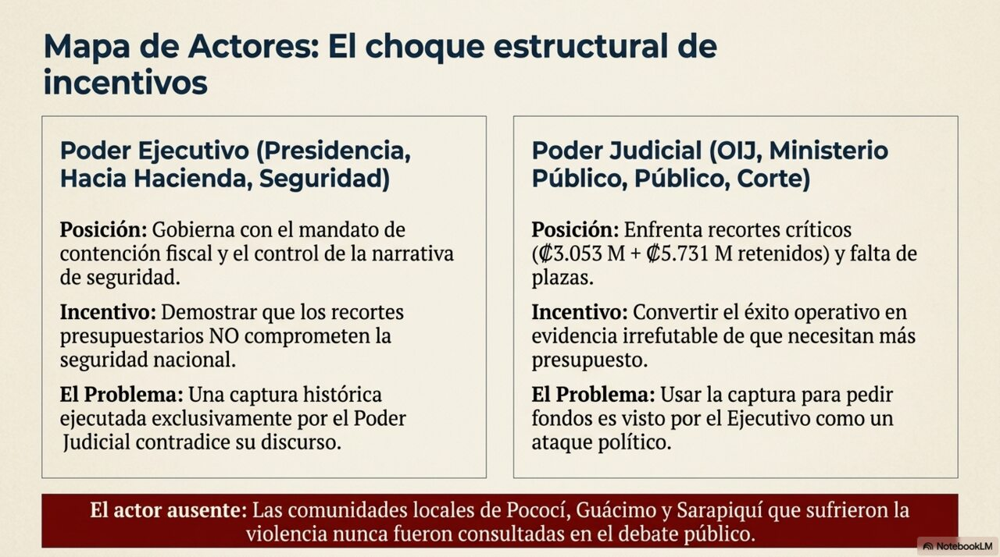
Las comunidades de Pococí, Guácimo, Cariari, Río Frío y Sarapiquí —que convivieron dieciséis años con la estructura, que aportaron la mayoría de las víctimas y que sufrirán primero cualquier reorganización violenta— no figuran como actor con voz en ninguna de las coberturas revisadas. Aparecen como escenario («los vecinos escucharon el intercambio de disparos») y como beneficiarias declaradas, nunca como sujeto consultado. Este silencio no es un descuido periodístico aislado: es un rasgo estructural de cómo se narra la seguridad en Costa Rica, y tiene consecuencias analíticas que la sección 7 desarrolla.
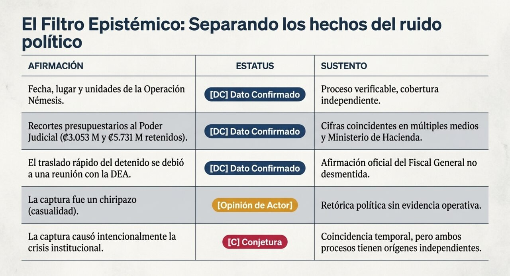
| Afirmación | Estatus | Proceso que la genera y su fiabilidad |
|---|---|---|
| Fecha, hora, lugar y unidades participantes en la Operación Némesis | [DC] | Comunicado institucional del OIJ, conferencia de prensa del director, cobertura coincidente de medios con líneas editoriales opuestas. Proceso altamente fiable |
| Ocho agentes heridos y un fallecido | [DC] | Cifra consolidada tras evolución de reportes. La convergencia posterior de fuentes independientes hacia el mismo número es el indicador de fiabilidad, no la rapidez del primer reporte |
| Más de 2.500 disparos intercambiados | [IP] | Fuente única institucional (OIJ), sin verificación independiente. El dato es plausible por el número de casquillos recolectables, pero es un recuento de la parte interesada en subrayar la intensidad del operativo |
| Términos y plazos de la prisión preventiva y calificación de delincuencia organizada | [DC] | Resoluciones judiciales identificadas por expediente y tribunal, comunicadas oficialmente por el Poder Judicial |
| Arias Monge es el líder de una organización criminal transnacional | [H] | Es la imputación del Ministerio Público y la caracterización del Departamento de Estado y la DEA. No hay condena. La convergencia entre dos sistemas judiciales independientes eleva la plausibilidad, pero no convierte una acusación en dato confirmado |
| La captura fue producto de trabajo de inteligencia, no de azar | [IP] | El Poder Judicial afirma certeza del 95% sobre la ubicación. La escala del despliegue —SERT, UVISE, OECDO, Ministerio Público, coordinación previa con jueces— es evidencia estructural difícilmente compatible con una acción fortuita. La hipótesis rival («chiripa») no explica el despliegue previo |
| La captura fue un «chiripazo» y hubo «escenografía preparada» | [Opinión de actor] | Afirmación de actores políticos sin evidencia aportada. El propio diputado que la formuló no presentó sustento. Se registra como posición, no como hipótesis en evaluación |
| El traslado matutino del 27 de julio se debió a una reunión con dos agentes de la DEA | [DC] | Afirmación del fiscal general en conferencia pública, verificable por su cargo y no desmentida por el Ejecutivo ni por la agencia estadounidense. Aporta además una explicación alternativa que el cuestionamiento gubernamental no consideró |
| Los recortes presupuestarios al Poder Judicial (₡3.053 M, ₡5.731 M, ₡8.688 M no girados) | [DC] | Cifras coincidentes en La Nación, El Observador, Amelia Rueda, CRHoy y en declaraciones no desmentidas del propio Ministerio de Hacienda |
| Los recortes tienen como propósito debilitar al Poder Judicial | [H] | Hipótesis con hipótesis rival viva: contención fiscal general. Discriminaría entre ellas la comparación del trato presupuestario dado a otros órganos del Estado en el mismo período. La Corte Suprema ha judicializado la cuestión alegando desviación de poder, lo que traslada la contrastación al terreno jurisdiccional |
| La captura causó la crisis constitucional del 30–31 de julio | [C] | Conjetura. La secuencia temporal es sugestiva pero ambos procesos tienen orígenes independientes documentados. Sostener causalidad requeriría evidencia de decisiones adoptadas en función de la captura, que no existe públicamente |
| La captura funcionó como acelerador de un conflicto preexistente | [Int] | Interpretación sistémica. No es una afirmación causal sino una descripción de cómo un acontecimiento reorganiza incentivos en un campo ya tensionado. Su valor es heurístico y así se declara |
| La organización se reorganizará violentamente tras la captura | [H] | Hipótesis con base comparada: la remoción de liderazgos en redes descentralizadas suele producir disputas sucesorias. Contrastable con la evolución de homicidios en Limón y Heredia norte en los próximos 90 días |
| El asesinato de Geiner Zamora en 2025 fue consecuencia de los audios de 2020 | [IP] | Inferencia con base en la correspondencia entre la oferta difundida y el perfil de la víctima. No hay imputación pública que establezca el vínculo. Se mantiene deliberadamente por debajo de [DC] |
| La hija del detenido fue «detenida» cerca de La Reforma | [C] — desmentida | Caso instructivo: varios medios titularon «detienen», el Ministerio de Seguridad precisó luego «identificada y retirada del sitio» por contar con permiso de portación. La versión inicial se propagó y persiste en titulares no corregidos |
El explicacionismo comparativo exige poner las hipótesis rivales una frente a otra y preguntar cuál explica mejor el conjunto de la evidencia, no cuál es más simpática.
Hipótesis A — Captura fortuita. Predice: ausencia de despliegue previo, improvisación de medios, ausencia de coordinación con el Ministerio Público y con jueces, y ausencia de operaciones preparatorias.
Hipótesis B — Captura por inteligencia acumulada. Predice: despliegue táctico especializado, coordinación interinstitucional previa, operaciones preparatorias sobre la red, y conocimiento aproximado de la ubicación.
Contraste con la evidencia. Lo observado incluye tres unidades especializadas del OIJ actuando conjuntamente, participación del Ministerio Público, apoyo de jueces, un operativo previo en cinco centros penitenciarios contra la red asociada, e intentos documentados de captura desde 2023. La hipótesis B explica todos esos elementos; la hipótesis A no explica ninguno. La afirmación de la «chiripa» no constituye una hipótesis rival en sentido epistémico —no genera predicciones ni ofrece evidencia— sino una descalificación. Registrarla como opinión de actor y no como hipótesis en evaluación es una decisión metodológica, no una toma de partido.
El alias «Diablo» funciona en la cobertura como un dispositivo que preconstituye culpabilidad: nombrar así a un imputado equivale a haberlo juzgado antes del juicio. Este informe lo usa porque es el identificador público del caso, pero lo hace declarando su efecto. La distinción entre lo que las autoridades imputan y lo que un tribunal establezca no es un tecnicismo: es la diferencia entre un Estado de derecho y su simulación. Y conviene notar que en la disputa política de estos días, el actor que más enfáticamente denuncia el riesgo de impunidad es el mismo que cuestiona públicamente las decisiones del órgano encargado de garantizar que el proceso se sostenga.
El fenómeno opera simultáneamente en tres niveles, que se analizan por separado y no se colapsan:
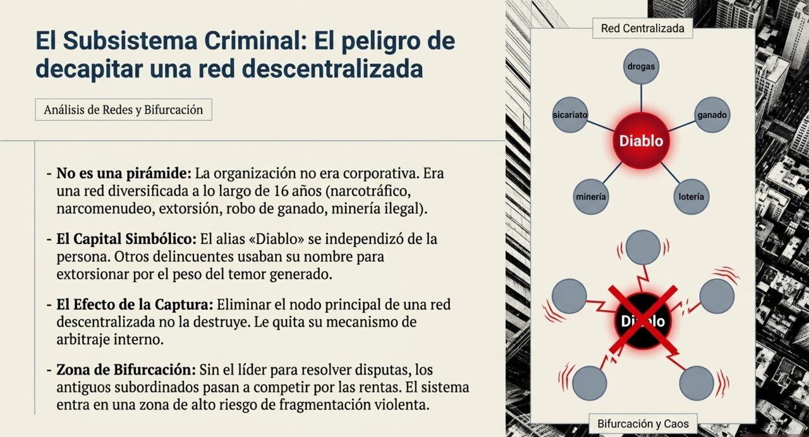
Para el subsistema criminal: la tasa de homicidios por ajuste de cuentas en Limón y en el norte de Heredia durante los noventa días posteriores a la captura. Es medible, tiene línea de base (61% de los 228 homicidios dolosos de enero a abril de 2026 correspondieron a ajuste de cuentas a nivel nacional), y su cruce al alza indicaría reorganización violenta. Sin declarar este parámetro, hablar de «bifurcación» en la estructura criminal sería metáfora.
Clausura organizacional. La organización atribuida a Arias Monge no se describe como una pirámide sino como una red descentralizada que combina narcomenudeo con alianzas violentas, a diferencia de otras organizaciones costarricenses enfocadas en el trasiego internacional con bajo perfil. Esa característica es determinante. Un sistema con clausura organizacional distribuida define internamente qué cuenta como perturbación y cómo responder sin depender de un centro de decisión único. La consecuencia es contraintuitiva y conviene enunciarla sin adorno: la remoción del nodo más visible de una red descentralizada no la desorganiza; le retira su mecanismo de arbitraje interno.
Flujos disipativos. La reproducción de esa organización requería importación continua de recursos, y la diversificación documentada muestra exactamente eso: narcotráfico, narcomenudeo, robo de ganado y agroquímicos, apropiación coactiva de la lotería clandestina de «tiempos», financiamiento de minería ilegal de oro, e introducción de drogas y celulares a centros penitenciarios mediante mujeres reclutadas en situación de vulnerabilidad —a quienes se pagaba cerca de ₡300.000 por entrega de una carga que dentro de la cárcel podía alcanzar los ₡5 millones. Esa diversificación no es codicia: es la condición termodinámica de sostener durante dieciséis años una organización armada en fuga permanente. Un sistema disipativo que deja de importar gradiente, colapsa.
Capital simbólico y violencia simbólica. El elemento más analíticamente interesante del caso es que el nombre se autonomizó de la persona. Está documentado que otros delincuentes usaban el alias «Diablo» para extorsionar a comerciantes sin pertenecer a la organización. En términos de Bourdieu, el capital simbólico acumulado —el temor como recurso— alcanzó una eficacia que ya no requería al agente que lo produjo. Los audios de 2020 con la oferta de recompensa por policías asesinados y la publicación de armamento en redes sociales no son exhibicionismo: son inversión en ese capital. Y su rendimiento es medible: un nombre que extorsiona por sí solo ha alcanzado autonomía funcional.
Si el capital simbólico circula con independencia del agente, entonces la captura no lo extingue de inmediato. Lo que la captura hace es abrir una disputa por su apropiación: quién puede seguir invocando el nombre y con qué credibilidad. Esa disputa es, en sí misma, una fuente de violencia. Es también la razón por la cual la efectividad de la captura no puede evaluarse por la captura misma, sino por lo que ocurra con el capital que queda vacante.
Colonización del mundo de la vida. El concepto habermasiano aplica aquí en su sentido estricto, no metafórico. La apropiación coactiva de los puntos de venta de «tiempos» —una práctica comunitaria de larga data en el Caribe costarricense, con lógica de reciprocidad y confianza local— por una lógica sistémica que opera por dinero y por poder es el mecanismo exacto que Habermas describe. Lo mismo vale para el reclutamiento de mujeres en situación de vulnerabilidad: la lógica del mercado penetra un dominio —la necesidad económica de subsistencia— y lo reorganiza según sus propios términos, sin que las afectadas hayan determinado internamente las condiciones de ese cambio.
Violencia estructural (Galtung). La trayectoria documentada —trabajador de compañías bananeras hasta cerca de 2010, luego robo rural, luego control territorial— transcurre íntegramente dentro de la economía de enclave del Caribe costarricense. Señalar esto no explica ni excusa las decisiones individuales, y la ADD es explícita en que el acoplamiento estructural no implica determinismo del entorno: la perturbación se procesa según la organización interna del sistema, y otras personas en condiciones idénticas produjeron trayectorias distintas. Lo que sí puede afirmarse es más modesto y más verificable: la provincia de Limón concentra sistemáticamente los indicadores más altos de violencia homicida del país junto a Puntarenas, y ambas son las provincias donde convergen la ruta del narcotráfico y la economía de enclave. La violencia estructural no produce criminales; produce el terreno donde ciertas trayectorias son disponibles y otras no.
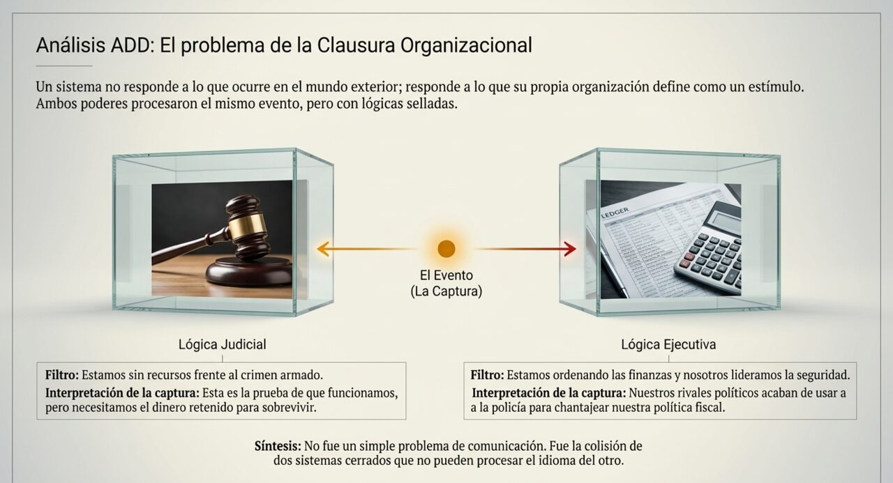
Aquí está el núcleo del fenómeno. La pregunta formulada en la sección 1 —por qué un éxito compartido produjo ruptura— tiene una respuesta precisa en términos de clausura organizacional.
Un sistema con clausura operacional no responde a lo que ocurre; responde a lo que su propia organización define como perturbación. Poder Judicial y Poder Ejecutivo procesaron el mismo acontecimiento —la captura— a través de organizaciones internas distintas, y por eso produjeron respuestas incomparables:
Ninguna de las dos respuestas es reacción a la otra. Cada una es determinada por la organización que la produce. Por eso el intercambio no converge aunque los hechos sean compartidos, y por eso subir el volumen no lo resuelve: no es un problema de comunicación, es un problema de clausura.
Colonización en la otra dirección. Si en el nivel comunitario la lógica sistémica del mercado criminal coloniza mundos de vida locales, en el nivel institucional se observa un movimiento estructuralmente análogo: la lógica sistémica del cálculo político-presupuestario penetrando el campo de la justicia penal. Cuando un diputado advierte públicamente que la Asamblea no aprobará más recursos «si continúan las decisiones que el Gobierno cuestiona», el medio sistémico —el dinero, el poder— está operando sobre un dominio que se reproduce por otra lógica: la de la legalidad y el debido proceso. El concepto de colonización se usa aquí conforme a la regla ADD: la lógica intrusora es sistémica, opera por dinero y poder, y no por comprensión comunicativa.
Violencia simbólica institucional. Las operaciones de reclasificación desplegadas en estos días —«chiripazo», «escenografía preparada», «pifias», «golpistas»— tienen una función precisa en el campo: desplazar la disputa desde el terreno donde el Poder Judicial tiene ventaja (la ejecución técnica verificable) hacia el terreno donde la tiene el Ejecutivo (la apelación pública directa). No se discute el resultado; se discute su significado. Es exactamente la operación que Bourdieu describe: el poder de imponer las categorías de percepción con que se lee la realidad.
Subsistema criminal: zona de bifurcación. La remoción del nodo de arbitraje en una red descentralizada cruza el umbral por definición: la organización no puede reproducir su patrón anterior. Lo que no está determinado es hacia qué configuración se reorganiza —fragmentación con disputa violenta, absorción por otra estructura, o continuidad bajo dirección delegada.
Subsistema institucional: turbulento con bifurcación latente, no consumada. El criterio para no declarar bifurcación es el mismo que se aplicó en el Boletín N.° 013: mientras la respuesta a una sentencia sea una querella y la respuesta a un recorte sea un recurso de revocatoria, el conflicto se procesa por vías institucionales. El umbral sería el desacato explícito.
Nota de rigor. Estos dos regímenes están acoplados por un canal concreto: la capacidad operativa del OIJ. Un debilitamiento presupuestario sostenido reduce la capacidad de procesar la reorganización criminal, lo que a su vez alimenta la percepción de inseguridad que sostiene el conflicto institucional. Es un lazo de retroalimentación positiva —en el sentido cibernético de amplificador, no de deseable— y es la razón por la cual los dos procesos no pueden analizarse por separado.
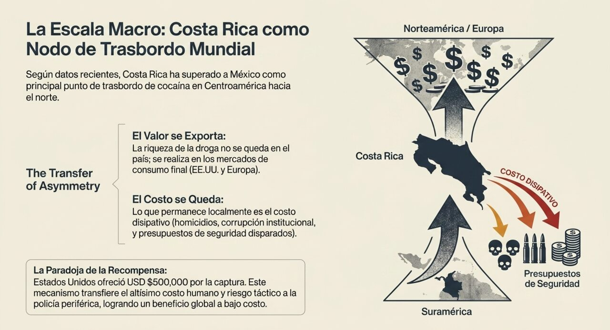
El nodo de trasbordo. Costa Rica funciona en la cadena mercantil de la cocaína como punto de trasbordo entre la producción sudamericana y el consumo en Norteamérica y Europa. Según el informe de Expediente Abierto sobre gasto en seguridad en Centroamérica, el país superó a México desde 2020 como principal punto de trasbordo de cocaína hacia esos destinos. Los decomisos del primer trimestre de 2026 se cuadruplicaron, de 3 a 12 toneladas, y hacia mayo acumulaban cerca de 20 toneladas.
La transferencia asimétrica. Aquí está el punto que el marco de sistemas-mundo aporta y que el análisis policial convencional no formula. En una cadena mercantil, el valor se realiza en el extremo del consumo; los costos de producción y tránsito se externalizan hacia los eslabones periféricos. La cocaína que atraviesa el Caribe costarricense no se queda: su renta se realiza en el mercado final. Lo que sí se queda es el costo disipativo de su tránsito: los homicidios, la corrupción de cuerpos policiales, la erosión institucional y el gasto en seguridad —que en Costa Rica pasó de USD 425 millones en 2020 a un presupuesto proyectado de USD 720 millones para 2026, equivalente al 2,79% del presupuesto nacional y al 0,66% del PIB.
Formulado sin eufemismo: el país no tiene un problema de narcotráfico porque produzca ni porque consuma de forma significativa en términos comparados. Lo tiene porque ocupa una posición geográfica en una cadena cuyas rentas se realizan en el centro y cuyos costos se disipan en el corredor. Reencuadrar la factura de seguridad como costo de reproducción del sistema-mundo y no como fracaso de política doméstica no exime de responsabilidad a ninguna administración; sitúa correctamente la escala del fenómeno.
La recompensa como mecanismo. Los USD 500.000 ofrecidos por el Departamento de Estado son un instrumento eficiente desde la posición del centro: transfieren el costo y el riesgo de la localización y captura al aparato policial del nodo semiperiférico, reservando el pago para el resultado. Ocho agentes costarricenses heridos y más de 2.500 disparos son el costo real de una operación cuyo beneficio principal —la interrupción de una ruta hacia el mercado estadounidense— se realiza fuera del territorio que lo pagó.
La extradición como cesión jurisdiccional. La reforma del artículo 32 mediante la Ley N.° 10730 de mayo de 2025 es, en términos de sistemas-mundo, un dato de primer orden: la semiperiferia cede una prerrogativa soberana histórica —la de juzgar a sus nacionales— como condición de la cooperación. Que la garantía negociada haya sido un techo de 50 años de pena revela la asimetría del intercambio: no se negocia si se cede, sino en qué términos. Y el caso de Jonathan Álvarez, alias «Gato», cuya extradición fue denegada por irretroactividad de la reforma, muestra que el instrumento tiene límites internos que los tribunales costarricenses están dispuestos a hacer valer.
El marco de Wallerstein y Arrighi opera en escalas de décadas. No predice el desenlace del proceso penal de Arias Monge ni la evolución del conflicto entre poderes en los próximos meses. Su aporte es explicar por qué la posición de Costa Rica en la cadena persiste con independencia de qué administración gobierne y de cuántos liderazgos criminales sean capturados. Confundir ese registro con una predicción coyuntural sería precisamente el uso metafórico que este programa se compromete a evitar.
Los escenarios se presentan en dos ejes independientes —el criminal y el institucional— porque no covarían necesariamente. Ninguno es una predicción. Cada uno incluye la señal observable que permitiría reconocerlo tempranamente.
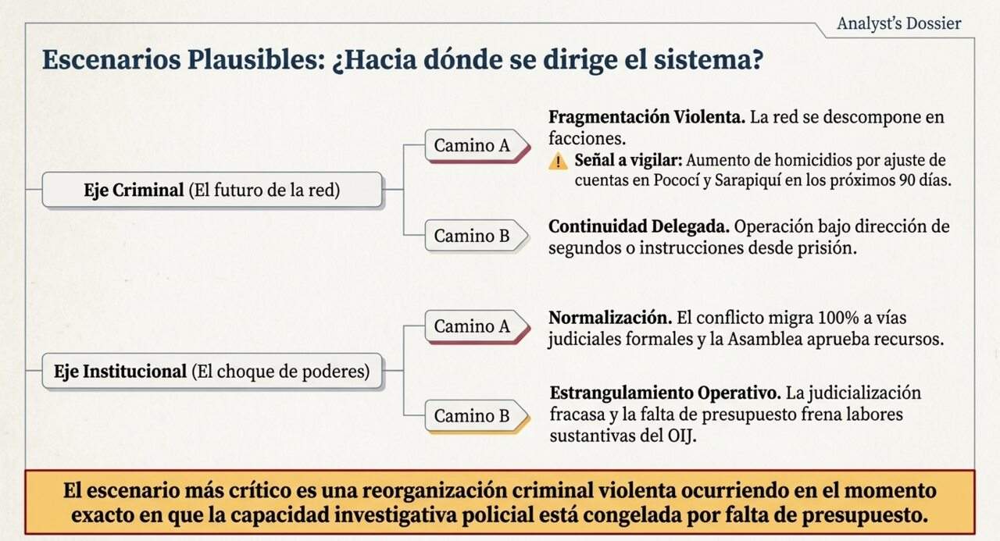
La combinación de mayor riesgo agregado no es la más dramática en ninguno de los ejes por separado: es fragmentación violenta (criminal A) coincidiendo con judicialización prolongada del conflicto presupuestario (institucional B). Ese cruce produce una reorganización criminal violenta en el momento exacto en que la capacidad investigativa está congelada por un litigio interinstitucional sin resolver. No es el escenario más llamativo; es el que combina alta probabilidad en ambos ejes con el peor acoplamiento entre ellos.
La captura reconfiguró el equilibrio de la disputa presupuestaria al dotar al actor más débil —el Poder Judicial— de un argumento público difícil de refutar. La respuesta del oficialismo, que pasó de la felicitación a la descalificación en cinco días, sugiere que ese efecto fue percibido con precisión.
Hay un elemento estructural que conviene subrayar sin dramatismo: esta administración gobierna con mayoría legislativa propia por primera vez desde 1990 para un solo partido. En esa configuración, el único contrapeso efectivo con capacidad de anular actos es el Poder Judicial. Que el conflicto se concentre allí no es contingente; es lo que la configuración institucional hace previsible.
Las cifras en disputa son modestas en términos macrofiscales y decisivas en términos operativos: ₡3.053 millones de recorte, ₡5.731 millones retenidos de la norma 10, y ₡8.688 millones no girados para 176 plazas en el OIJ y 99 en el Ministerio Público. El ministro de Hacienda ha argumentado que el presupuesto del Poder Judicial asciende a ₡550.000 millones, de los cuales ₡57.000 millones estarían por encima de lo que a su juicio debería recibir.
La discusión de fondo es legítima y no la resuelve este informe: cuánto debe recibir el Poder Judicial es una decisión política que corresponde a los órganos electos. Lo que sí puede señalarse es un problema de secuencia: aplicar la reducción sobre gasto operativo —viáticos, combustible, chalecos, munición, insumos científicos— produce efectos inmediatos sobre capacidad de campo, mientras que la discusión estructural sobre el tamaño relativo del presupuesto judicial es de largo plazo. Se está resolviendo un problema estructural con un instrumento coyuntural.
Las comunidades del Caribe y del norte de Heredia son las que asumirán primero cualquier reorganización violenta. Limón y Puntarenas concentran sistemáticamente los indicadores más altos de violencia homicida del país por su vinculación con las rutas del narcotráfico. La tendencia nacional es favorable —de 905 homicidios en 2023 a una proyección de menos de 800 para 2026, con el promedio diario bajando de 2,5 a 1,9— pero la agregación nacional oculta la concentración territorial.
Hay además un efecto de segundo orden poco discutido: la investigación sobre funcionarios policiales presuntamente vinculados a la estructura. Si se confirma, el daño a la confianza institucional en esas comunidades será mayor y más duradero que el causado por la organización misma. La captura de un líder criminal es reversible en sus efectos; la constatación de que la policía estaba comprada, no.
El caso ofrece un objeto de estudio de valor excepcional para la criminología, la antropología y la ciencia política costarricenses: una trayectoria de dieciséis años documentada, una estructura descentralizada con diversificación económica registrada, y un experimento natural sobre los efectos de la remoción de liderazgo. La producción académica nacional sobre crimen organizado sigue siendo escasa frente a la magnitud del fenómeno.
Hay también una lección metodológica para la política pública: la Operación Némesis fue posible por acumulación de inteligencia durante años, no por despliegue masivo de fuerza. Ese es un dato relevante para el diseño de estrategias de seguridad, y es precisamente el tipo de capacidad —paciente, técnica, poco visible— que un recorte sobre gasto operativo erosiona antes que ninguna otra.
Costa Rica ha sostenido durante décadas un relato de excepcionalidad institucional en la región centroamericana: sin ejército desde 1948, con una Sala Constitucional creada en 1989 y con niveles de violencia históricamente bajos. Los tres pilares de ese relato están siendo tensionados simultáneamente en este caso: la violencia alcanzó en 2023 su nivel más alto de la historia reciente, el tribunal constitucional es acusado de golpismo por la jefa de Estado, y la prohibición constitucional de extraditar nacionales —vigente por más de un siglo— fue removida en 2025.
La observación no es catastrofista y merece formularse con precisión: los relatos de excepcionalidad nacional cumplen funciones reales, y su erosión no equivale al colapso de lo que describían. Pero sí obliga a una pregunta que el país no ha respondido de forma explícita: qué sustituye a la excepcionalidad como fundamento de la identidad institucional costarricense, ahora que sus tres pilares están en revisión simultánea.
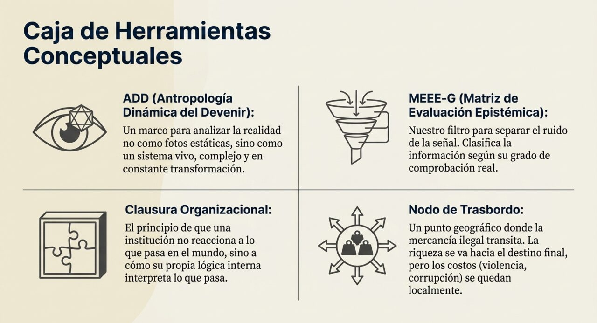
[DC] dato confirmado por fuentes fiables independientes · [IP] inferencia plausible desde datos confirmados · [H] hipótesis de trabajo, con vías de contrastación · [Int] interpretación sistémica · [C] conjetura, con evidencia insuficiente.Todas las fuentes periodísticas fueron consultadas el 2 de agosto de 2026.
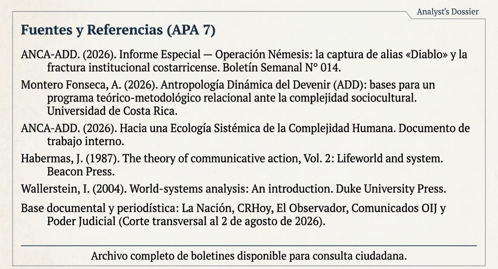
Nota metodológica. Este informe corresponde a la LLAMADA C del protocolo ANCA-ADD —análisis en profundidad de un tema concreto— e integra tres registros analíticos distintos y no colapsables: la evaluación epistémica explicacionista (MEEE-G, inspirada en la epistemología de Alvin I. Goldman), el análisis dinámico antropológico (ADD, según el marco de Alfredo Montero Fonseca) y la capa de sistemas-mundo (Wallerstein / Arrighi). Los códigos epistémicos —[DC] dato confirmado, [IP] inferencia plausible, [H] hipótesis, [Int] interpretación, [C] conjetura— caracterizan el estatus justificatorio de cada afirmación según el proceso que la genera.
Se declaran los siguientes controles de rigor aplicados en este documento. Primero, el parámetro de control fue declarado por separado para cada uno de los dos subsistemas analizados antes de emplear el concepto de bifurcación, conforme a la Advertencia 1 del protocolo ADD. Segundo, el tipo de analogía se declaró por nivel: literal para los flujos financieros y de recursos, fuerte para la organización simbólica y para el nivel comunicativo-institucional. Tercero, se declaró explícitamente que el análisis de violencia estructural no implica determinismo del entorno, conforme a la Advertencia 2. Cuarto, se registró como opinión de actor —y no como hipótesis en evaluación— toda afirmación política sin evidencia aportada, en ambas direcciones del conflicto.
Sobre el estatus procesal. Alejandro Arias Monge y Jonathan Pérez Méndez son imputados en prisión preventiva. No existe condena en firme. Toda referencia a hechos delictivos en este documento constituye imputación de las autoridades o línea investigativa en curso, no determinación de culpabilidad. Rige plenamente la presunción de inocencia.
Este análisis combina evaluación epistémica explicacionista (MEEE-G) y análisis dinámico antropológico (ADD). No constituye predicción determinista ni recomendación política. Toda conclusión es revisable ante nueva evidencia.